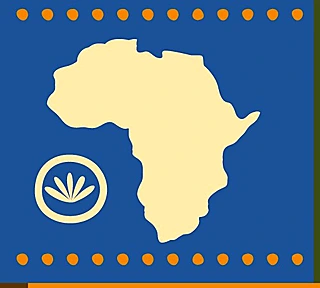

The 8th Workshop on African Natural Language Processing
EACL 2027, Athens, Greece
9–14 March 2027
One day, hybrid
workshop day to be announced
To encourage collaboration across skill levels and career stages, AfricaNLP runs a peer mentorship programme. The previous programme drew 64 participants, and the 2027 edition is built on their feedback. Applications open here ahead of the submission deadline.
Alongside mentorship, and subject to sponsorship, we:
Our organizers are primarily African researchers and researchers of African descent, and our programme committee is selected for diversity of institution, language expertise and career stage.
AfricaNLP 2027. Co-located with EACL 2027, Athens, 9–14 March 2027.